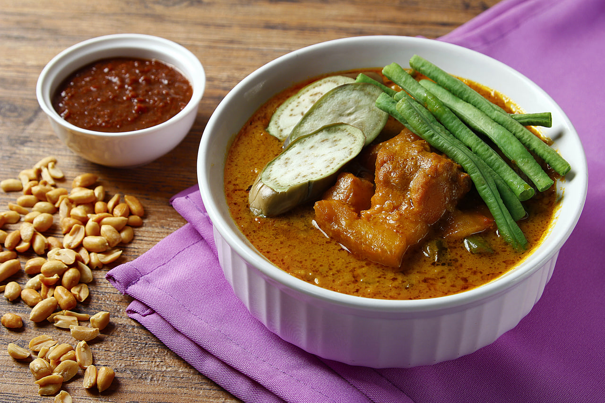

Pampanga
Kare-Kare
Kare-Kare is a rich, festive Filipino peanut stew widely associated with Pampanga and the broader Tagalog region in Central and Southern Luzon. It is traditionally made with slow-cooked oxtail and beef tripe, submerged in a thick, savory peanut sauce naturally colored bright orange with annatto (atsuete). The stew features a medley of indigenous vegetables, including banana blossom (puso ng saging), eggplant, string beans, and pechay. Because the peanut sauce itself is mild and slightly sweet, Kare-Kare is strictly eaten with a side of salty, savory sautéed shrimp paste (bagoong alamang) to complete its iconic flavor profile.

Gather
Ingredients
- Oxtail, cut into serving slices
- Beef tripe (tuwalya), cleaned and sliced
- Water (for boiling)
- Onion, quartered
- Peanut butter (unsweetened preferred) or ground roasted peanuts
- Toasted rice flour (for thickening)
- Annatto seeds (atsuete) soaked in warm water to extract color
- Garlic, minced
- Onion, chopped
- Cooking oil
- Banana blossom (puso ng saging), sliced and soaked in salted water
- Eggplant, sliced diagonally
- String beans (sitaw), cut into 2-inch lengths
- Pechay (bok choy)
- Sautéed shrimp paste (bagoong alamang)
- Steamed white rice
For the Meat and Broth
For the Peanut Sauce
For the Vegetables
For Serving
Make it
Recipe
- In a large heavy pot or pressure cooker, place the oxtail, beef tripe, and quartered onion. Cover with water and boil until the meats are completely tender (about 2.5 to 3 hours on a stovetop, or 45 minutes in a pressure cooker). Skim the scum off the top.
- Once tender, remove the meat and strain the beef broth. Set both aside.
- In a separate pan, blanch the string beans, eggplant, banana blossom, and pechay in boiling water for a few minutes. Drain and set aside so they don't overcook in the stew.
- In a large pot, heat oil and sauté the minced garlic and chopped onion until aromatic and translucent.
- Add the tender oxtail and tripe, stirring them in the aromatics for a couple of minutes.
- Pour in about 4 to 5 cups of the reserved beef broth and bring to a simmer.
- Stir in the peanut butter (or ground peanuts) and the red annatto water (straining out the seeds). Mix well until the peanut butter dissolves completely and the broth turns a rich orange.
- Gradually whisk in the toasted rice flour (dissolved in a little water first to prevent lumps). Let it simmer for another 5 to 10 minutes, stirring frequently, until the sauce thickens to your desired consistency.
- You can either mix the blanched vegetables directly into the pot, or arrange them nicely on top when transferring to a serving dish.
- Serve hot alongside steaming white rice and a small saucer of sautéed shrimp paste (bagoong alamang) for dipping.